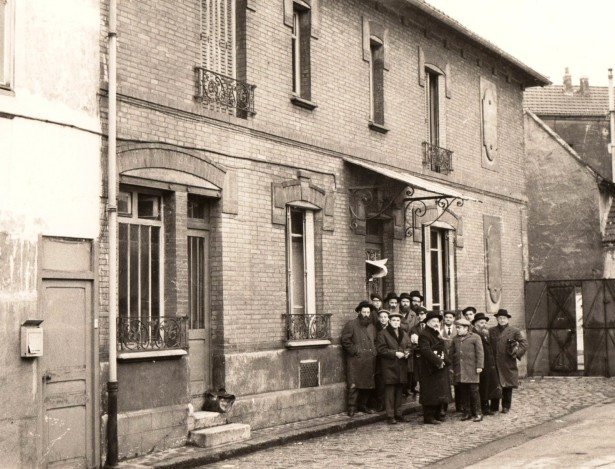

דמות מופת חסידית הייתה דמותו של הרה”ח הרב שלום מענדל קלמנסון, שהגיע לצרפת כפליט
דמות מופת חסידית הייתה דמותו של הרה”ח הרב שלום מענדל קלמנסון, שהגיע לצרפת כפליט אך באומץ רב נרתם למען הקמת מוסד חינוכי חסידי עבור ילדי יהודים שלא ידעו צורת אות עברית * בביטול עול אופייני נרתמו הרב קלמנסון ורעייתו מרת בתיה להקמת המוסד החינוכי ‘שניאור’. השניים לא בחלו בשום עבודה כדי לממש את חזונם החינ
דמות מופת חסידית הייתה דמותו של הרה”ח הרב שלום מענדל קלמנסון, שהגיע לצרפת כפליט אך באומץ רב נרתם למען הקמת מוסד חינוכי חסידי עבור ילדי יהודים שלא ידעו צורת אות עברית * בביטול עול אופייני נרתמו הרב קלמנסון ורעייתו מרת בתיה להקמת המוסד החינוכי ‘שניאור’. השניים לא בחלו בשום עבודה כדי לממש את חזונם החינוכי הטהור תוך הדרכה צמודה מהרבי מה”מ * סיפור מרגש של זוג חסידים שהקימו ממלכה חינוכית * על פי הספר ‘פעילות חוצה גבולות’ שנכתב על ידי הרה”ח ר’ שלום דובער פרידלנד

באובערוויליע היו לא מעט יהודים, רבים מהם היו בני מהגרים שהגיעו מארצות צפון–אפריקה לצרפת. הללו למדו בבתי ספר ממשלתיים מה שכמובן מנע מהם מלשמור מצוות, שבת, כשרות כמו גם בעיות רבות נוספות בעניני יראת שמים.
לא היה זה פרויקט של מה בכך; אין ספור בעיות ניצבו בדרכו, אישורי ממשלה, מציאת אנשי חינוך מתאימים, הכנת תכניות לימודים, השגת מימון לקניית מקום מתאים ואחזקתו, ועוד רבות. ר’ שלום מענדל נאלץ להתמודד עם קבלת אישורים והכרה מצד הממשלה והעירייה, שבין חבריה היו שנמנו על המפלגה הקומוניסטית. כשפנה בנושא לעיריה, ננזף קשות על רצונו להקים מוסד פרטי שיגרום אפליות בין ילדי האזור, “כשיגדלו לי שערות על כף ידי, נאשר את בקשתך” - השיב הממונה על החינוך בעיר…
עזרה בלתי צפויה
בהשגחה פרטית נפתח לו פתח סיוע בלתי צפוי למימון קנין המקום. בין שלל עיסוקיו, היה ר’ שלום מענדל מוהל, והוא היה מתייצב לכל ברית מילה אליה הוזמן. באחת הבריתות שערך בפאריז בי”ד במר–חשון תשכ”ג, נכח הרב אברהם יצחק הירש, ממנהלי ארגון ‘הפעילים’ בניו יורק שהתרשם לטובה מהמוהל ומהרצינות הנשקפת ממנו. שיחה רצינית התפתחה בין השניים, כאשר ר’ שלום מענדל גולל בפני האורח את הקשיים העוברים על עולי אלג’יר שהתיישבו באובערוויליע וסביבתה. בין הדברים פירט את מוכנותו ליטול על עצמו עול כבד של ייסוד בית ספר - ‘ישיבה קטנה’, כלשונו.
לאחר דין ודברים וחילופי מכתבים שנמשכו חודשים ארוכים, הסכימו ראשי הפעילים בארה”ב להיות שותפים בהקמת המוסד החינוכי. הקשר עם הארגון נמשך כשבע שנים כשבמשך זמן זה תרמו חלק גדול מעלות קניית בנין בית הספר ומימנו חלק מההוצאות השוטפות בשנים הראשונות.
מאותה עת בה בישר ר’ שלום מענדל לרבי מה”מ בשנת תשכ”ה על אודות רכישת מקום עבור בית הספר, החל הרבי להוסיף בקביעות לתאריו בכותרות המכתבים ששיגר לו תואר נוסף: “עוסק בצ”צ” [עוסק בצרכי ציבור]. פעמים רבות הרבי אף הוסיף את התואר - “רב פעלים”.
קניית מתחם בית הספר
כפי הצפוי, חברי העירייה שהשתייכו למפלגה הקומוניסטית, סירבו בתוקף לאשר הקמת בית ספר יהודי דתי. לטענתם, אופי בית הספר נוגד לרוח הקומוניסטית ומדובר באפליה. אך בהשגחה פרטית מופלאה האישור הגיע; על פי החוק הצרפתי, ברגע שמבקש האישור מגיש את הבקשה לעירייה ובמקביל למשרדי הממשלה המחוזיים הנקראים “פרעפעקטור”, יש בכוח העירייה להטיל ווטו ולבטל את הדרישה, אך אם כעבור חודש ימים מאז שקיבלה את הבקשה לא הגיבה מאומה - ‘שתיקה כהודאה’, הממשלה נוקטת זאת כאישור, ומשרדי ה’פרופעקטור’ מאשרים זאת לאור הסכמת העירייה. כשהגיש ר’ שלום מענדל את הבקשה הכפולה, הביעו חברי העירייה את סירובם בעל פה במפורש ושללו זאת על הסף, אך משום מה יום רדף יום ומשלוח חוות דעתם על גבי הכתב נדחה ונדחה. יום לאחר שעבר החודש הקצוב נזכרו כי עדיין לא שלחו את סירובם.
אנשי העירייה ניסו לתקן זאת מיד באמצעות דרישה למלא את בקשתו בטפסים הראויים פעם נוספת, כך שיעניק להם חודש נוסף להבעת עמדתם כעל בקשה חדשה. אך ר’ שלום מענדל באמצעות עורך דין של הקהילה, סירב. הוא דרש להכיר, כהוראת החוק, בבקשה, כמאושרת. לחברי העירייה לא נותרה ברירה, ובית הספר קיבל אישור מהממשל המחוזי.
מכאן ואילך אנשי העירייה ניסו להערים קשיים על כל צעד ושעל ודרשו תקנים גבוהים של בטיחות ונוחות לילדים, מה שהכריח הוצאת סכומים בלתי צפויים על השיפוץ וההכנה הסטנדרטית של המבנה לשימוש.
בז’ באדר תשכ”ה בישר הרב קלמנסון לרבי על גמר קניית המקום בשעה טובה.
את התרגשותו מקניית המקום, ניתן ללמוד ממכתב ששיגר לחברי הפעילים על רכישת הבניין, ומביע את תקוותו לעתיד:
פותח אני בברכה והודאה להשי”ת עבור גמר קנין הבתים בשביל המוסד, שהננו משתדלים לייסד זה יותר משנתיים. הננו מקוים להשי”ת שזה הבנין ישמש בתור הנחת אבן פינה למוסד קדוש שבו ילמדו ויקבלו חינוך כשר, מאות מילדי הפליטים שיחיו. וישפיע לטוב על מצב היהדות בכלל בכל הסביבה”.
פתיחת בית הספר
בסוף שנת תשכ”ה סיכם ר’ שלום מענדל עם מנהלי ארגון הפעילים בניו יורק על פתיחת שתי הכיתות הראשונות. הם מצידם הבטיחו מימון מלא לששת החודשים הראשונים, ומימון חלקי לחודשים הבאים. לשם כך הגיע מנהל הארגון ר’ אברהם יצחק הירש למקום. כתוצאה מהתרשמותו החיובית תרם תיכף אלף דולר נוספים להוצאות הבניין.
לפי התוכנית היה בית הספר אמור להתחיל לפעול בשנה”ל תשכ”ו, אך השיפוצים הנדרשים והאישורים הנחוצים שעוכבו בינתיים בידי העירייה גרמו לכך שהלימודים החלו בשנת הלימודים הבאה, תשכ”ז.
בכל שלב במסע הקמת בית הספר והקהילה היה ר’ שלום מענדל שולח דו”ח לרבי בו היה מעדכן על ההתפתחויות ומצרף את העתקי מכתביו למסייעים להקמת בית הספר. ובכל שאלה קריטית היה ממתין לתשובה מהרבי.
כך למשל, כשר’ שלום מענדל ראה שהענינים ‘תקועים’ בגלל עיכוב האישורים המיוחלים מצד העירייה וריבוי התקציבים שעליו להשיג - החליט לנסוע לחצרות קדשינו ולשטוח בפני הרבי את שאלותיו.
במכתבו מג’ אדר תשכ”ו מגולל את סיבת בואו - לברר את שאלותיו ולקבל חיזוק. הרבי מצדו השיב על כל שאלותיו אחת לאחת, כמו אב דואג ואוהב, המתמסר לענייניו של בנו אהובו.
לאורך שנת תשכ”ו התאמץ ר’ שלום מענדל להביא את רעיון בית הספר לידי פועל, ערך מגביות, לחץ על העירייה בעצמו ובאמצעות עורך דין והחל ברישום תלמידים.
בימים שלפני ראש–השנה תשכ”ז הגיעה ביקורת מהעירייה ומשרד החינוך לבדוק אם המקום מתאים לבית ספר. בדו”ח שכותב לרבי מודיע כי אישרו רק כיתות בודדות, וגם זה בתנאי של תוספת שיפוצים הכרוכים בעוד השקעות כספיות. לר’ שלום מענדל זה נחשב ‘בשורה טובה’, וכלשונו: “לפי ערך הרשעות שלהם - צריך לומר שזהו תשובה נכונה”.
מיד לאחר החגים בשנת תשכ”ז החל בית ספר ‘שניאור’ לפעול עם 19 תלמידים, וזאת משום שכמה מאלו שכבר נרשמו, החלו את השנה בבתי ספר עממיים. אך עוד באותו חורף המספר עלה לארבעים ילדים. על הבשורה הטובה, ענה הרבי בהוספה למכתב כללי של כ”ד טבת, שנשלח אחרי י’ שבט: “מאשר הנני קבלת מכתבו והפ”נ לי”ש [לי’ שבט] ות”ח ת”ח [ותשואות חן תשואות חן] על הבשו”ט [הבשורות טובות]”.
ילדי הפליטים ‘מהחוץ’ יודעים כבר בעל–פה ‘מודה אני’ ו’שמע ישראל’
ר’ שלום מענדל מיהר לבשר לארגון הפעילים על פתיחת הלימודים בבית הספר, ומביע את שמחתו והרגשת האחריות המחייבת אותו להמשיך ולדאוג לקיומו: “פותח אני בברכה והודאה להשי”ת על חסדו הגדול, שהחינו וקימנו והגיענו לזמן פתיחת בית הספר. העובדה שכבר נכנסנו ב”ה בחודש השני של קיום בית הספר היא עדות נאמנה שהוא בר קיימא בעזרת השם יתברך . . האחריות הגדולה שקבלנו על עצמנו כלפי ההורים שהוציאו את ילדיהם מבתי ספר הצרפתים, והמורים שעזבו עבודתם במקום אחר, והעיקר האחריות לגבי העתיד של הילדים בעצמם, מחייבת אותנו שלא לשכוח אף רגע, אשר אין אנו יכולים להסתפק בזה שפתחנו את בית הספר, רק צריכים אנו לדאוג על קיומו והתפתחותו”.
במכתב אחר ששיגר לנדיבים, ניתן ללמוד עוד על החזון הכביר שראה ר’ שלום מענדל בעיני רוחו:
“אתם מביעים תמיהתכם הגדולה על זה שלא כתבנו לכם על אופן התנהלות בית הספר . . האם רוצים אתם לדעת איזה מסכת לומדים, וכמה דפים גמרא למדו כבר?! נקוה שגם לזה נגיע אי”ה, אבל לא בחודשיים הראשונים. לעת עתה יכולים אנו להיות שמחים ומאושרים, וזה שוה כל הון דעלמא, מזה שילדי הפליטים ‘מהחוץ’ יודעים כבר בעל–פה ‘מודה אני’ ו’שמע ישראל’, ואם נותנים להם בונבון [סוכריה] יודעים שצריך לברך על זה ‘שהכל’, ויודעים א’–ב’, ומתחילים לקרוא, ואחדים לומדים חומש וסופגים בעצמם עניני יהדות. ודבר זה מעודד אותנו.
“והידיעה שעוד כמה מאות ילדים מחכים לפעולותינו מחייבת אותנו להמשיך במרץ ובמסירות נפש בעבודתנו הקדושה - ולא הסכומי כספים ששולחים לנו, שאין זה מספיק אפילו לחלק מהחובות.
“מה שאתם כותבים שלפי התנאים צריכים להיות 25 תלמידים ולא 19, הנה המספר 19 בתור התחלה ובזמן שיש סיכויים להכפיל ולשלש בעתיד הקרוב הוא מספר מצוין. בשנה שעברה שכבוד תורתו פתח בית ספר [במקום אחר] בשבע תלמידים - היה שמח מזה שמחה גדולה. ובליאון פתחו בית ספר עם תלמיד אחד וגם כן ב”ה הצליחו. רואים מזה שבהתחלה לא העיקר הוא הכמות, ובפרט שיש לנו הכמות ב”ה הנה בלי שום ספק נצליח אי”ה יותר מן המשוער. ב. בשבועות האחרונות התווספו עוד תלמידים ויש לנו כעת יותר מארבעים תלמידים כ”י.
מסירות נפש ברישום תלמידים
רבים מיוצאי מדינות צפון אפריקה שהתגוררו באיזור, העדיפו לשלוח את ילדיהם לבתי ספר עממיים על מנת שישתלמו בתחום האקדמאי, ירכשו תארים ואפשרויות להשתבץ במסגרת שירותי המדעים והתעסוקה הצרפתיים. לא כולם נתנו את ליבם למצב הרוחני של בני משפחתם.
ר’ שלום מענדל, וזוגתו מרת בתיה החלו משרכים את רגליהם אל ריכוזי הפליטים במטרה לשכנע את ההורים להעניק לבניהם חינוך יהודי כשר. אחד המקומות המרכזיים היה מתחם המגורים בעיירה הסמוכה ‘לה–קורנעוו’ הנקראת בשם “מתחם השלושת–אלפים” - בנייני המגורים במתחם מנו שלושת אלפים יחידות דיור צפופות עמוסות בפליטים. אחוז ניכר מהם היו יהודים ובקומת הקרקע התקיימו מניינים שלש פעמים ביום.
דא עקא, בריכוז גבוה כל כך של פליטים, שרובם בני משפחות ערביות, מחוסרי פרנסה וחינוך - הפשע גאה. הצעירים בני המיעוטים היו פורצים וגוזלים מעוברי האורח ומאיימים על שכניהם. קבוצות מקומיות שונות נעשו יריבות זו לזו. המקום נתפרסם לשלילה. מי שלא התגורר במקום, העדיף להדיר רגליו ממקום זה. אפילו ‘רופאי חירום’ שהוזעקו למקום, סרבו להגיע אל הפציינטים - הם ידעו כי ימצאו את מכוניתם מנופצת שמשות ומרוקנת. המשטרה הגדירה את המקום כמתחם ‘נגוע בפשע’, והעדיפה שלא לחדור בו יתר על המידה…
בני הזוג קלמנסון, אף הם שמעו את שמו האיום של האזור. אך הם ידעו כי ימצאו שם יהודים רבים שבניהם משוועים לחינוך כשר. הם כיתתו את רגלם למקום, טיפסו במעלה הקומות, מדירת יהודי אחד למשנהו, הקישו בדלתות והתחננו על עתיד ילדיהם. כאשר דמותם ניבטה מבעד הפתח התקבלו בשמחה ובכבוד. אחרי הכל לא בכל יום מבקרים רב ורבנית באופן אישי בבית. בעלי הבית היו מכבדים אותם בכיבוד קל, ובהתרגשות ניכרת מצטופפים לשמוע את אשר בפיהם, ולשתפם בהוויי חייהם וקשייהם היום יומיים. ר’ שלום מענדל דיבר בצורה נוקבת אודות המסורת היהודית של הדורות שקדמו להם ועל הסכנות הטמונות לדורות העתידיים בלא חינוך כשר, על הניסיונות והקשיים, ועל הצלחת ילדיהם העתידית בכל התחומים גם בבית ספר יהודי.
לא היה קל לשכנע הורה קשה–יום, שעתיד בנו ניצב לנגד עיניו בצבעים ורודים, לשלוח את ילדו לבית ספר שזה עתה נפתח, בלא ניסיון, לא מושלם, ותחת הנהלה חרדית מחוסרת תארים אקדמאיים. ולמרות זאת, רבים החלו נעתרים לבקשותיו. מה גם שבתקופה ההיא לא ביקשו שום שכר לימוד עבור בית הספר. ההורים עצמם מחוסרי עבודה היו ברובם, כיצד ניתן להכביד על שכמם. אט אט נקבצו קבוצת ילדים שהחלו את לימודם בבית ספר ‘שניאור’. הדבר דרבן את ר’ שלום מענדל שהמשיך בתכיפות לבקר בבתי היהודים בעיירות הסמוכות ולמשוך ילדי ישראל נוספים.
דוגמה אחת מיני רבות מאופן עבודתם, מספר מר אברהם חיים תורג’מן: “באחד מערבי סוף שנת תשכ”ו נשמעו נקישות בדירתנו. כנהוג, כל בני המשפחה ניגשו לפתוח את הדלת. להפתעתנו ניצבו בפתח שלשה אנשים - הרב קלמנסון, הרבנית, ומורה מבית הספר שתפקידה היה לתרגם את המדובר לצרפתית רהוטה, בעת הצורך. הוריי שנחשבו למסורתיים אלא שקשיי המקום והזמן החלישו אצלם את האפשרויות המעשיות לכך, התרגשו מהביקור והזמינו אותם להיכנס.
“הרב קלמנסון החל להסביר להוריי כי לילדיהם הלומדים בבית ספר לאומי צפויה סכנת טמיעה ח”ו, וניתוק מהיהדות. הנה פתחנו השנה בית ספר על טהרת היהדות, ומבקשים לשלוח את ילדיך אלינו. אנו נדאג לכל - הסעות, אוכל, לימודים וחוויות! הוריי נתרצו. “כבר מחר על הילד להיות מוכן בשעה שמונה על–יד הבנין, אנו מגיעים הנה לקחת אותו!” פסק הרב קלמנסון. למחרת הגיעה ההסעה והובילה אותי למקום הלימודים החדש. כך הייתי מהמנין המייסד של ‘בית ספר שניאור’. שנה לאחר מכן נשלח ל’שניאור’ אחי דוד תורג’מן שכיום הוא רב ופעיל מפורסם ב’מבצעים’ ועניני הרבי”.
שנים רבות שמר ר’ שלום מענדל על קביעות זו. בשנים המאוחרות יותר, הצטרפו אליו בני משפחתו ושינו רבות את צביון בתי היהודים וחיי הצעירים שהתגוררו באזורים אלו. רבים זכו לחזק את זהותם היהודית, ואף ממש להתקרב לחיי תורה ומצוות אודות לפעולותיהם. עם הזמן נוצר גרעין של עשרות בעלי תשובה שהקימו משפחות יהודיות חסידיות לשם ולתפארת.
גם קשיים מפתיעים עמדו בדרכם. לדוגמה, בביקורם בבית אחת המשפחות עמלו רבות לשכנע ולדבר על לב האב להסכים ולהעביר את בנו, ילד נחמד ומוכשר, לבית הספר היהודי. לבסוף המאמצים הוכתרו בהצלחה, ומני אז עברה מרת קלמנסון עם האוטובוס בסמוך לביתו של הילד לאוספו לבית הספר. באחד הימים הילד לא המתין במקום. כשהדבר נשנה למחרת, העבירה את הידיעה לבעלה ר’ שלום מענדל כדי שיבדוק מה קורה. עוד באותו הערב התייצב ר’ שלום מענדל בביתם לדעת את הנעשה. האב קיבלו בסבר פנים יפות, אך נחושות: ‘תשמע, שלחתי את ילדי אצלכם להתקדם, עברו כמה שבועות, והוא כבר יודע להתפלל, ולקרוא בחומש. הנה פתאום גודל לי רב בבית, ואני נעשה כסמרטוט מיום ליום. כמה שבני יודע יותר, מתגלה כמה בור אני. אינני מוכן להמשיך עם המצב הזה, ולהביא למצב שאני ה’בעל הבית’ אראה כ’סמרטוט”’.
לא הועילו שום הסברים - כי אדרבה כל הבית יתרומם בזכות הילד, וזכותו הרוחנית של הילד תיזקף לזכות ההורים המחנכים. מה גם שלא עולה להם מאומה, לא הלימודים ולא ההסעות, הכל ניתן בחינם. האב סירב בכל התוקף ולא הסכים בשום אופן לסכן את מקומו כ’אב המשפחה’, על כל המשתמע מכך.
עזר כנגדו
לצדו של ר’ שלום מענדל, עמדה רעייתו מרת בתיה קלמנסון. את כל חייה האישיים ונוחיות החיים, עם כל ההווי המשפחתי והסביבתי, העמידה לטובת התלמידים וקיום בית הספר. לא יום ולא לילה, על ההגה ועל הסירים, לרגע לא פסקה מלהתרוצץ ללא לאות, עבור ילדי ישראל.
השכם בוקר היתה מתיישבת על יד הגה האוטובוס (ראה במדור “סיפור לשבת” בגיליון זה). לדברי התלמידים והוריהם - מנת יראת השמים שרכשו הילדים בזמן ההסעות, נחקקה בהם לא פחות מאשר השהיה במשך כל היום בבית הספר.
כששבה מהסיבוב - שהחל לפני השעה שבע בבוקר והסתיים סמוך לשעה תשע - הזדרזה לביתה לסיים להלביש ולהאכיל את ילדיה הקטנים. ומיד אחר כך החלה לבשל מאכלים מזינים ובריאים עבור תלמידי בית הספר.
אחר האכלת כל הפיות, דאגה לניקיון המקום, הקשיבה לכל מי שהיה צריך לשפוך את ליבו, וסייעה בהנהלת חשבונות המשרד. בשלב זה החלה להתארגן לסיבוב החזרת התלמידים שהסתיים בשעה מאוחרת בערב וכל זה היה לשם שמים ובמטרה לגרום לרבי נחת רוח. היא לא נטלה אף פרוטה אחת בשכרה.
ר’ שלום מענדל ורעייתו העמיסו על עצמם עבודות רבות במטרה לחסוך בהוצאות בית הספר. על אפיזודה מעניינת מספר ר’ יעקב ביטון, שליח הרבי בסרסל, ובזמנו מורה בבית הספר:
“באחד הימים עבר אוטובוס ההסעות של בית הספר בדרך מסלולו לאסוף את התלמידים ומאיזה סיבה, דילג על מקום מגוריו של אחד התלמידים. הילד הזעיק את אביו לעזרה והאב שהיה בעל מכולת, וכבר נכח בחנות, נאלץ לנועלה, ולהוביל את בנו לבית הספר.
האב בער מכעס על המחדל. היתכן לשכוח את בני, ולגרום לי להפסיד לקוחות? חשב בליבו. אני עוד אחנך את המנהל של בית הספר על המחדל. בהגיעם לבית הספר ירד מהמכונית בכעס בולט ומיד ניגש ל’פועל’ שעבד במקום - יהודי מזוקן שפרק לבדו ארגזי פירות וירקות מהמכונית לתוך הבנין, לשאלו למקום משכן ‘המנהל’, הרב קלמנסון, שכנראה מתרווח לו באיזה משרד.
היהודי המזוקן הציע לו תיכף לומר ברכה על פרי: ‘כנראה אתה קצת רעב, תאמר ברכה!’ הציע בסבר פנים. האב שהחל להירגע ביקש בתוקף להיפגש עם המנהל. לאחר שסיים ר’ שלום מענדל לסחוב את כל הארגזים פנימה, הציע לו להיכנס למשרדו הצנוע והפשוט להשמיע את דבריו. האב לא יכול היה לדבר - מה, אתה המנהל?! ואתה עצמך סוחב את כל הקניות, בלא לבקש סיוע מאף אחד מהעובדים?! תמה. איך הוא יכול לבוא בטענות לאדם שבגופו נושא בסבל בית הספר וכל כך משקיע עבורו. ברגע אחד השתנתה נימת דבריו, וטען כי הוא הגיע על מנת לתרום להחזקת בית הספר. האב הוציא את פנקס ההמחאות, ורשם סכום חשוב להחזקת בית הספר”.
הילדים משתתפים במלחמת ששת הימים
בינתיים גדל מספר התלמידים ונוספו כיתות. צוות בית הספר אף הוא התפתח ונוספו כחמישה מורים ומורות ללימודי קודש ולהבדיל לימודי חול, כשעל גבם נבחר הרב יוסף דוד פרנקפורטר לנהל את בית הספר בשנותיו הראשונות. הרב פרנקפורטר השקיע את כוחותיו בחינוך הכשר ובהתפתחות בית הספר.
מוסיף ומספר מר אברהם תורג’מן: “בבית הספר נחשפתי לראשונה ל’רבי מליובאוויטש’. הורגלנו לשמוע בכל יום - ‘הרבי אמר’, ‘הרבי הורה’, ‘הרבי ברך’. הבנו כי מדובר בצדיק גדול מאוד. בתודעתי ציירתי אותו כמלאך שיש לציית לכל דבריו, וכל מה שהוא מבטיח, מתקיים. בזכות זה גם בשנים שלאחר מכן, היה לנו חשוב לנו לציית להוראותיו, ובראש ובראשונה להתחזק בעניני תורה ומצוות.
“אחד הדברים החקוקים ביותר בליבי, ואולי הוא גם מבטא את האוירה ששררה אז, היו ימי מלחמת ששת הימים. אנו כ’ילדים צרפתיים’, לא היינו מעורבים במתרחש במזרח התיכון, אך שמענו כי עלולה לפרוץ מלחמה. בבית הספר הרב קלמנסון דיבר הרבה מההוראות שמסר הרבי. ומסר לנו כי הרבי הבטיח שהכל יהיה בסדר אך ביקש שיערכו כינוסי ילדים ויאמרו עימם תהילים.
“כאשר פרצה המלחמה, ידענו כי הרבי בעצמו סומך עלינו והתפילות שלנו מסוגלות לפעול ניצחון למען היהודים - התכנסנו יחד סמוך לארון הקודש, ומספר שעות אמרנו את כל ספר התהילים, מילה במילה עם המורה. לקרוא לא ידענו עדיין היטב, חזרנו אחרי המורה את כל ספר התהילים עם בכיות ותחנונים שה’ יציל את עם ישראל. חלק מהילדים נצמדו לארון הקודש לפנים מן הפרוכת במשך כל העת. למחרת המחזה חזר על עצמו. עד היום אינני מבין איך היינו מסוגלים שעות ארוכות לומר ברצינות כה רבה את ספר התהילים ללא הפסקה. הרגשנו שהמלחמה תלויה בנו. אנו נלחמים למען ישראל. הרבי נתן לנו תפקיד לנצח, ואנו נעשה זאת בשלמות.
“כל יום מימי המלחמה התחננו בפני הקב”ה שהיהודים לא ייפגעו וידם תהיה על העליונה. הרגשנו שאנו נוטלים חלק פעיל במלחמה. לאחר ששה ימים, נכנס הרב קלמנסון לכיתתנו בצהלה: ‘היהודים ניצחו, עם ישראל ניצח’. פרצנו בריקוד ושמחה, ישראל ניצחה, אנחנו ניצחנו! זה אנחנו, התהילים שלנו, הכרענו אותם! עד היום כשאני שומע על מלחמת ששת הימים, אני מרגיש כמי שנטל חלק פעיל במלחמה”.
הרבי רווה נחת
בחמשת הכיתות שפעלו בשנת תשכ”ח, כולל הגן, למדו כמאה תלמידים. רמת הלימודים היתה גבוהה ובבחינה הממשלתית השיגו תלמידי בית הספר ציונים הכי גבוהים לגבי כל בתי הספר האזוריים, דבר זה העלה את קרנם בעיני האקדמיה של פריז.
לימים החלו בנותיהם של בני הזוג קלמנסון להיכנס לענייני בית הספר. תחילה הייתה זו בתם הבכורה - מרת ביילא רישא, שעשתה את עבודתה, כמובן, בלא נטילת שכר. בשנה שלאחר מכן החלה בתם השניה, מרת רבקה, לעמוד לצד אחותה הגדולה ולייעל את ניהול המוסד. בחודש טבת תשכ”ט כאשר מרת ביילא באה בקשרי השידוכין עם ר’ מנדל הלל גנזבורג, נטלה על עצמה אחותה רבקה את עול ההנהלה הרוחנית בשלמות. וכך המנהג המשיך בשנים שלאחר מכן. מאז ועד היום, שרביט הנהלת המוסד עבר בין בני המשפחה.
בכל פעם שהרבנית קלמנסון היתה עוברת לפני הרבי לקבל את ברכתו הקדושה, היתה ניכרת על פניו הקדושות שביעות רצון. “בכל עת בה נכנסתי, הרבי היה מעניק לי הרגשה אבהית ודואג להשיב לי על כל פרט ולעודדנו בתפקידינו - הרגשתי היתה כבת הנכנסת לאביה לבקש על הצטרכויותיה. בכל פעם כשעמדתי לקבל את ברכת הנסיעה לפני נסיעתי חזרה לצרפת היה הרבי מעניק את ברכתו הקדושה כשחיוך של נחת נסוך על פניו הקדושות. מברכות אלו קיבלנו כוחות רבים להמשיך בעבודה”, סיפרה.
הרבי רווה הרבה נחת מעבודתם המסורה, והדבר התבטא בתשובות וביחידויות הרבות להן זכו ר’ שלום מענדל ורעייתו.
להלן מבחר קטעים מהם.
על התבטאות נדירה שהתבטא הרבי בפניה, המבטא את חשיבות עבודתה, מספרת הרבנית בתיה קלמנסון: “הוריי היו מעודכנים בעבודתי הקשה בבית הספר, והדבר רבץ והכביד על ליבם. הם דאגו מאוד לבריאותי הפיזית והנפשית. פעם, לפני ‘יחידות’ שלי, אמי ציוותה עלי במפגיע לומר לרבי בשמה, כי הנני לוקחת על עצמי מידי הרבה עבודה והיא מבקשת ממני לבקש מהרבי רשות להוריד מעט מהנטל שעלי. מחוסר ברירה, הבטחתי לה כי אעשה זאת.
“נכנסתי ליחידות בחשש ובמתח מלווה בהתלבטות עזה כיצד לקיים את ציוויה של אמי. לאחר ברכותיו הקדושות, אמרתי לרבי כי יש לי דבר לומר. אין זה בא ממני, אלא אמי ציוותה עלי לומר זאת. חזרתי על דבריה של אמי, וכבקשתה תיארתי את סדר יומי. הרבי הביט במבט מבין כשחיוך רחב של נחת על פניו הקדושות, והביע את דבריו המצלצלים באוזניי עד היום הזה: “ככה, ככה?! תדעי לך שהקב”ה שמח מעבודתכם. תמשיכו בזה, ותוסיפו עוד יותר. וזה יביא לכם ברכה. תמסרי להורייך שיכנסו אלי ואני כבר אסתדר איתם”.
“כל הענין עם בקשתה של אימי היה שווה רק כדי לשמוע מפיו הקדוש מילים אלו. כשיצאתי מחדר היחידות מיהרה אמי לברר מה הרבי הורה לי. כשסיפרתי לה, היא אמרה לי בחיוך כמשלימה עם המצב: ‘נו, עם דבריו המפורשים של הרבי אי אפשר לשחק’.
המהפך שהתחולל בעיצומו של יום כיפור
במשך השנים נכנסו עוד מבנות המשפחה לעבוד בבית הספר בשליחות חינוכית. פעילותן של שלושת הבנות, שטערנא שרה דייטש, לאה רסקין וחיה ניסלביטש, הניבה פירות, ומספר רב של נערות והוריהן החלו למצוא את דרכן ליהדות.
כך למשל מספר מר שלמה כהן: “לאחר הגירתם של בני משפחתנו מצפון אפריקה לצרפת, הם מצאו את עצמם, כרבים אחרים, מתגוררים בדירה קטנה בפריפריות של פריז. בני משפחתנו הצטופפו בשכונה אחת עם אלפי משפחות מהגרים, ברובם ערבים. קשיי הכלכלה הגדולים ואי הבהירות לגבי העתיד גרמו שמצאתי את עצמי בבית הספר הממשלתי, מסובב בחברים רבים שאינם יהודים. עד מהרה נעשיתי מוכר כילד שובב ופיקח, מומחה לתעלולים וערמומיות. ילדים שנטו לפשיעה נדבקו אלי וביקשו ללמוד טכניקות וטקטיקות כיצד ‘להעלים דברים’ ו’להדביק חפצים ליד’ בלא להיתפס.
“יום אחד הציע אחד הילדים הערבים לגשת לבית הכנסת של היהודים; מעניין שם, היום הוא ‘יום כיפור’ ישנם יהודים רבים, אולי נוכל ללעוג להם. הובלתי את החבורה לבית הכנסת במטרה לספק לחבריי הרפתקה מעניינת. התקרבנו למקום כששובל ילדים עוקב אחר כל תנועה שלי. בסמוך לפתח בית הכנסת גילינו המולה. בפנים התפללו כל המבוגרים, אך הנערים והילדים התרכזו בחוץ. בתוך ההמולה עומדות שתי נערות, ‘מורה שרה’ ו’מורה חיה’ המכריזות פסוקים ותפילות, והילדים נענים וחוזרים אחריהם מילה במילה. המחזה סיקרן אותי, רימזתי ל”חבריי” שיעזבו אותי לנפשי כי אין בדעתי לעולל שום תעלול. אני מעוניין להכיר מקרוב את המתרחש. זה מדבר אלי.
“כעבור מספר רגעים, ‘מורה שרה’ ניגשה אליי ושאלה אותי לשמי. ‘סלומון כהן’ - עניתי. אז אתה יהודי? ווידאה ושיתפה אותי באמירת התפילות. היא לא הרפתה עד שקיבלה ממני את הכתובת שלנו. כבר למחרת הופיעה בפתח בתינו משלחת מטעם בית ספר ‘שניאור’. היו אלו הרב קלמנסון מלווה בבנותיו. הם החלו לשכנע את הוריי לשלוח אותי לבית ספר יהודי. הוריי שמחו על ההצעה. בבית הספר המקומי לא התקדמתי במיוחד והכיוון בו צעדתי לא היה מרנין.
“החינוך שקיבלתי בבית ספר שניאור שינה את חיי ומילא אותי סיפוק עצום. התבגרתי, למדתי מקצוע והחינוך נשאר טבוע בי - נשארתי שומר תורה ומצוות, מהמשתתפים הקבועים בפעולות הקהילה המקומית ומהגרעין הקבוע של בית הכנסת ב’לה קורנעוו’. גם ילדיי למדו כמובן ב… בית ספר שניאור”.
המנהל החדש עושה “בעיות”
בחודש אלול תשל”ו חל מהפך בבית הספר, כאשר הרבי אישר לר’ שלום מענדל להכניס מנהל אחר תחתיו, הלא הוא חתנו הרה”ח ר’ מענדל דייטש (ע”ה). “המענה לו ולחתנו - בכלל ההצעה נכונה”, כתב המזכיר בשם הרבי.
מכאן ואילך, עול ההנהלה הגשמית עבר לר’ מענדל דייטש, כשזוגתו ממשיכה לעמוד בראש ההנהלה הרוחנית. כשנכנסה הרבנית בתיה קלמנסון בהזדמנות הקרובה ליחידות, חייך הרבי בהתייחסו למינויו של חתנה כמנהל: “נו, האט איר! ער איז דער פאסיקער מענטש אויף דעם [נו, [כעת] יש לכם [מנהל], הוא האיש המתאים לכך].
ר’ מענדל דייטש השקיע את ראשו ורובו בפיתוח המוסדות. על הפרק עמד כיסוי החובות הקודמים ופיתוח בית הספר לממדים גדולים. הוא פתח במבצע גיוס כספים בארצות הברית ובמדינות נוספות, וב”ה ראה ברכה בעמלו.
“כשנכנסתי ליחידות בתשרי תשל”ח - סיפר ר’ מענדל דייטש לימים - הביט בי הרבי, והתעניין בקול רם: “האסטו דא מצליח גיווען [האם הצלחת כאן]?”. לא ידעתי מה נחשב ‘הצלחה’ בעיני הרבי. בשבריר של שניה הבזיק בראשי מה לענות, נקבתי בסכום שהצלחתי לגייס, בלא להגדירו כהצלחה או אי–הצלחה. על פניו הקדושות נראתה קורת רוח. הרבי נטל עיפרון ורשם על הדף שהגשתי בהיכנסי ליחידות, את הסכום.
“כשחזרתי לפריז פגשתי את הרב בנימין גורודצקי והוא אמר לי: ‘מענדל, אתה עושה בעיות לשלוחים!’ הבנתי כי דבריו קשורים לדברי הרבי אליו. נבהלתי, מה עשיתי? אך הוא הבהיר את דבריו בחיוך: ‘לאחרונה, כשנכנסתי לרבי לדווח על פעולות השלוחים באירופה, נסובו דברי אודות כמה מהשלוחים שנתקעו בבעיות התפתחות ותקציבים. כשפירטתי את בעיותיהם לרבי, אמר לי הרבי: ‘אינני מבין, הגיע אדם מירושלים, שמו דייטש, הוא איננו יודע את השפה, והוא מצליח הן להביא ילדים, והן לאסוף כספים’”.
הדרכות חינוכיות מפי הרב חדקוב
בעשורים הבאים הלך בית הספר והתפתח תחת הנהלתו הגשמית של ר’ מענדל דייטש, ובהנהלתה הרוחנית של מרת חיה ניסלעוויטש ששימשה כדוגמה למסירות ונתינה.
המטרה העיקרית שלשמה נוסד בית הספר - הפצת היהדות ומעיינות החסידות - עשתה ועדיין - עושה את שלה. אלפים מבין התלמידים שלמדו בו במרוצת השנים באו מבתים שלא נמנו על שומרי התורה והמצוות, אך החינוך העמוק שקיבלו הילדים חלחל אל הבתים. משפחות רבות מאד הפכו לשומרי תורה ומצוות הודות לחינוך הפנימי והעמוק שקיבלו ילדיהם במוסדות החינוך ‘שניאור’.
גם ילדים שבאו מבתים חרדיים אך מחוגים רחוקים מהחסידות - הביאו את רוח החסידות לבית הוריהם. המושגים ‘הפצת היהדות’, ‘נשמה אלוקית’, ‘השגחה פרטית’ ‘הכנת הסביבה לביאת המשיח’, ‘התקשרות לצדיק’ ועוד רבים אחרים, נעשו שגורים בפיהם כמו בפי חסידים מאז ומתמיד.
לקראת סוף שנות המ”ם מנה בית הספר קרוב לאלף תלמידים (!) הן בבית הספר היסודי, בתיכון לבנים והבנות, בגן הילדים וב’חדר’ על טהרת הקודש.
מדרך הטבע, צצו שאלות חינוכיות מורכבות. מי שסייע בשלבים אלו, היה יו”ר המזכירות של הרבי, הרב חיים מרדכי אייזיק חדקוב ע”ה שנתן את עצותיו וסיפק כיוון והדרכה. הרב חדקוב נחשב כאיש חינוך מהדרגה הראשונה, והיה ברור כי דבריו מכוונים לרצונו ודעותיו הקדושות של הרבי.
מספרת מרת ניסלעוויטש: “בחודש תשרי תש”נ שהינו בחצרות קדשינו, ובמהלכו הציע לי אבי להיכנס יחד אתו אל הרב חדקוב ולהציע בפניו את שאלותיי, יחד עם שאלה נוספת העומדת בפני כל מנהל מוסד - כיצד יש לנהוג בתלמידים קשים, האם להעלים עין, או לנקוט ביד קשה עד כדי הרחקה מהמוסד.
“הרב חדקוב קיבל אותנו במאור פנים ולמרות זקנותו וחלישותו הושיט לנו כסאות וכיבוד. לאחר שסיימתי להרצות את שאלותי, הרב חדקוב החל להרצות את דבריו בשקט, דבריו גלשו מפיו צלולים חדים וברורים בקול נעים וצעיר מלווה בחיוניות רבה, למרות גילו המבוגר, ומשנתו סדורה בפיו. הרב חדקוב החל להבהיר את מה שעל המוסד להעניק לתלמיד:
“תלמיד הלומד במוסד חבד”י יש להחדיר בו את ההכרה כי ‘אין עוד מלבדו’, המציאות כולה ואישיותו בכללה בטלה בתכלית לקב”ה. ועל כן פותחים את היום ב’מודה אני’ - מיד כשהאדם מתעורר ונעשה כמציאות, הרי הוא מתבטל בפני הקב”ה. לאחר מכן הוא מתפלל, התפילה היא זמן להעמיק בתוכן ביטולו של היהודי לאלוקות ולהחדיר את ההכרה הזו גם בחושיו וכוחותיו הפנימיים.
“על המוסד להעניק לתלמידים את ההכרה כי הכל סובב סביב בורא העולם, הכל בטל אליו, וכל ענינו של האדם הוא כדברי המשנה ‘אני לא נבראתי אלא לשמש את קוני’.
המוסד כיום
בשנים הבאות נכנסו בני משפחה נוספים להנהלה ועוסקים במרץ בניהול המוסדות בהצלחה - בראשם ר’ מאיר שמחה קלמנסון המשמש כשליח וכמנהל גשמי כללי בליוויים הצמוד והמסור של אחיו ר’ יוסף יצחק קלמנסון וגיסם ר’ אליעזר ניסלביץ’. הם עושים לילות כימים להצלחת המוסד ללא לאות.
עד אחרית ימיו השתתף ר’ שלום מענדל בכל עניני ופעילות בית הספר, למד עם תלמידים מתקשים, הדריך אותם בדרכי היהדות בהפסקות, והנחיל לתלמידים תוכן יהודי אותנטי מלווה בדוגמה אישית מידי יום ביומו.
הרבנית בתיה קלמנסון - שתבדל לחיים ארוכים - המשיכה לדאוג להסעות ולחלוקת האוכל גם עם התפתחות המוסד שגדל לממדים גדולים עם צוות שלם. עד היום ניצבת על משמרתה ב”ה. כבר למעלה מיובל שנים משגיחה על התלמידים, דואגת לצרכיהם הרוחניים והגשמיים, מלמדת אותם להתפלל, לנהוג בנימוס וביושר, ליטול ידיים, לברך לפני ואחרי הסעודה, מלמדת מהי קדושת התורה, קדושת היהדות וקדושת הנשמה היהודית, מהו ציות לרבי, מהי קבלת עול ועוד.